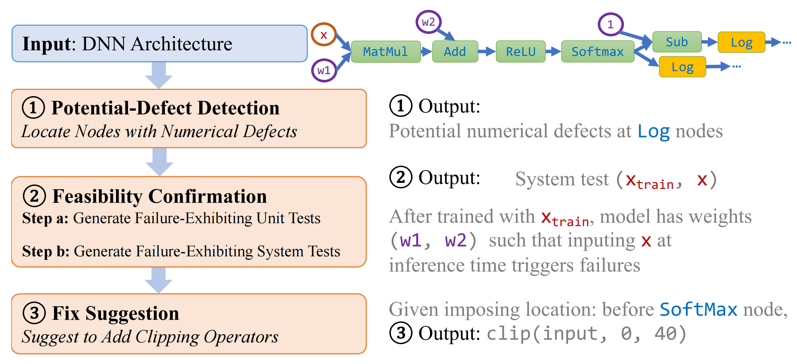

Reliability Assurance for Deep Neural Network Architectures Against Numerical Defects
To assure high reliability against numerical defects, in this paper, we propose the RANUM approach including novel techniques for three reliability assurance tasks: detection of potential numerical defects, confirmation of potential-defect feasibility, and suggestion of defect fixes. To the best of our knowledge, RANUM is the first approach that confirms potential-defect feasibility with failure-exhibiting tests and suggests fixes automatically.

But here I will only focus on the detection of potential numerical defects via static analysis.
Static Analysis for Potential-Defect Detection
The computational graph can be viewed as a Directed Acyclic Graph (DAG): \(\mathcal{G} = \langle\mathcal{V}, \mathcal{E} \rangle\).
We call nodes with zero in-degree as initial nodes, which correspond to input, weight, or constant nodes.
We call nodes with positive in-degree as internal nodes, which correspond to concrete operators, such as matrix multiplication (MatMul) and addition (Add).
We let \(\mathbfit{x}\) and \(\mathbfit{w}\) denote the concatenation of data from all input nodes and data from all weight nodes, respectively. E.g., in @#fig-ranum-computational-graph, \(\mathbfit{x}\) concatenates data from nodes 1 and 11; and \(\mathbfit{w}\) concatenates data from nodes 2 and 4.
We use \(f_n^{\textsf{in}}(\mathbfit{x}; \mathbfit{w})\) and \(f_n^{\textsf{out}}(\mathbfit{x}; \mathbfit{w})\) to express input and output data of node \(n\), respectively, given \(\mathbfit{x}\) and \(\mathbfit{w}\).
input_data = tf.placeholder("float", [1, n_features], name='x-input')
input_labels = tf.placeholder("float", [1, n_classes], name='y-input')
self.W_ = tf.Variable(tf.zeros([n_features, n_classes]), name='weights')
self.b_ = tf.Variable(tf.zeros([n_classes]), name='biases')
model_output = tf.nn.softmax(tf.matmul(input_data, self.W_) + self.b_)
cost = -tf.reduce_mean(input_labels * tf.log(model_output) +
(1 - input_labels) * tf.log(1 - model_output),
name='cost')
self.obj_function = tf.reduce_min(tf.abs(model_output), name='obj_function')Definition. For the given computational graph \(\mathcal{G} = \langle\mathcal{V}, \mathcal{E} \rangle\), if there is a node \(n_0 \in \mathcal{V}\), such that there exists a valid input and valid weights that can let the input of node \(n_0\) fall within the invalid range, we say there is a numerical defect at node \(n_0\). Formally, \(\exists \mathbfit{x}_0 \in \mathcal{X}_{\textsf{valid}}, \mathbfit{w}_0 \in \mathcal{W}_{\textsf{valid}}, f_{n_0}^{\textsf{in}}(\mathbfit{x}_0; \mathbfit{w}_0) \in \mathcal{I}_{n_0,\textsf{invalid}} \Longrightarrow\) \(\exists\) numerical defect at node \(n_0\).
For example, ImageNet Resnet50 models have
- valid input range \(\mathcal{X}_{\textsf{valid}} = [0,1]^{3\times 224 \times 224}\): image pixel intensities are within \([0,1]\);
- valid weight range \(\mathcal{W}_{\textsf{valid}} = [-1,1]^{p}\): weights of well-trained
Resnet50models are typically within \([-1,1]\); - The invalid range \(\mathcal{I}_{n_0,\textsf{invalid}}\): determined by the operator type of node \(n_0\). For example, for the
Logoperator, the invalid range is \((-\infty,U_{\text{min}}]\), where \(U_{\text{min}}\) is the smallest positive number of a tensor’s data type.
DNN Static Analysis Framework with Backward Fine-Grained Node Labeling for Potential-Defect Detection
A DNN architecture + valid ranges for input and weight nodes \(=>\) interval abstractions for possible inputs and outputs of each node.
Formally, for given valid ranges of inference input and model weights, namely \(\mathcal{X}\) and \(\mathcal{W}\), for each node \(n \in \mathcal{V}\), our framework computes sound input interval abstraction \([\mathbfit{l}_n, \mathbfit{u}_n] := \{\mathbfit{x} : \mathbfit{l}_n \leq x \leq \mathbfit{u}_n\}\) such that \([\mathbfit{l}_n,\mathbfit{u}_n]\) always captures all possible inputs of the node: \([\mathbfit{l}_n,\mathbfit{u}_n] \supseteq \{f_n^{\textsf{in}}(\mathbfit{x}, \mathbfit{w}) : \mathbfit{x} \in \mathcal{X} , \mathbfit{w} \in \mathcal{W}\}\). We also compute output interval abstractions similarly.
The interval domain with tensor partitioning provides a degree of freedom in terms of the partition granularity, i.e., we can choose the subblock size for each node’s abstraction. When the finest granularity, i.e., elementwise abstraction, is chosen, the abstraction interval is the most concrete. When the coarsest granularity (i.e., one scalar to summarize the node tensor) is chosen, the abstraction saves the most space and computational cost but loses much precision.
E.g., \(([−1, 0], [0, 1], [1, 2], [−1, 0])\):
- the finest granularity, \([\mathbfit{l}_n, \mathbfit{u}_n] = [(−1, 0, 1, −1),(0, 1, 2, 0)]\).
- the coarsest granularity, \([\mathbfit{l}_n, \mathbfit{u}_n] = [−1, 2]\).
Using the finest instead of the coarsest granularity for some nodes is more beneficial for overall abstraction preciseness.
- the control-flow operators, e.g.,
Loop - the indexing operators, e.g.,
Slice - shaping operators, e.g.,
Reshape